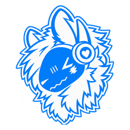

Good Boy
Connect to your bot. It needs your dashboard link once.
Dashboard link
Connect
Where to find it: open the Good Boy app on the computer that runs your bot, go to
Settings > Dashboard link
, press
Share dashboard
, then copy the link.